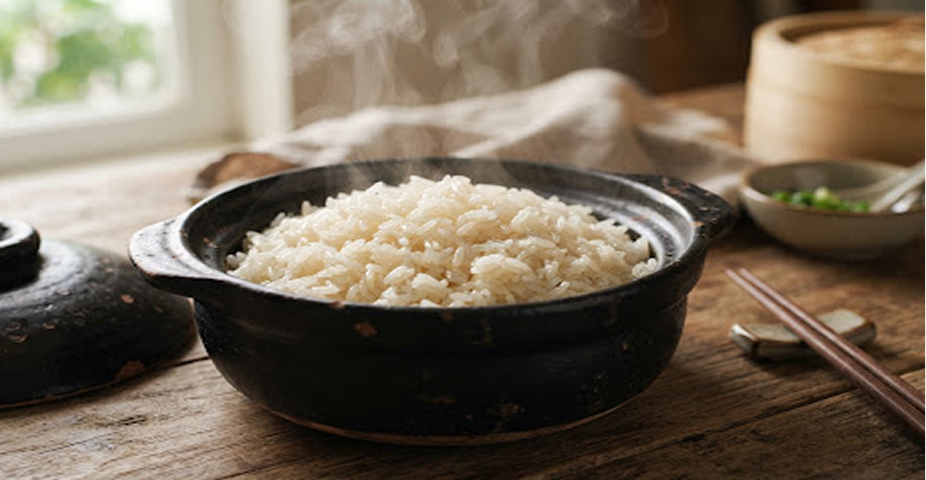
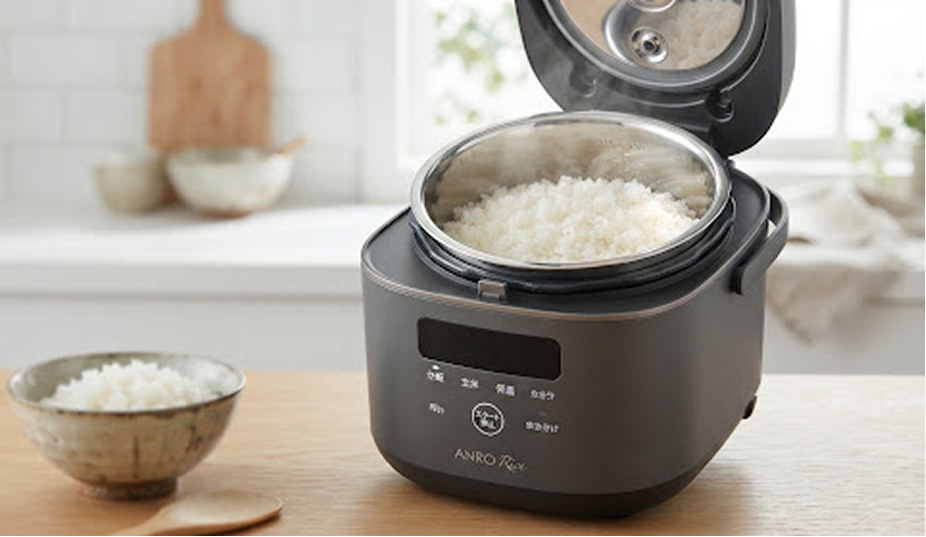
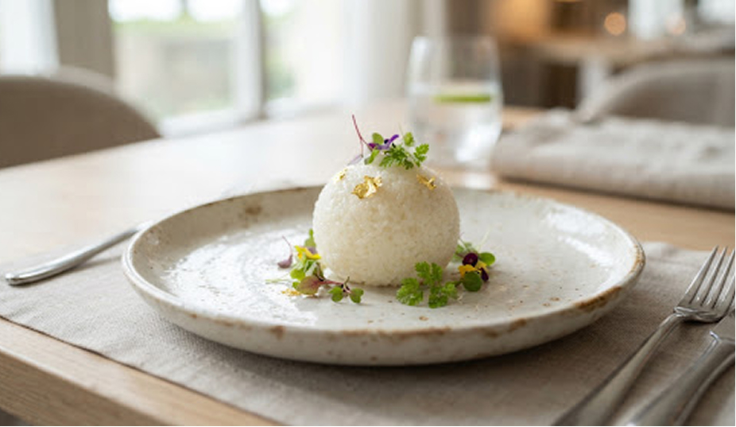

Bí Quyết Cân Đối Tỷ Lệ Nước Vàng
Cho Gạo ST25 Dẻo Ráo Từng Hạt
"Khác với các dòng gạo nở xốp truyền thống, ST25 mang kết cấu tinh bột Amylose thấp đặc trưng (15 – 16%). Việc áp dụng thói quen 'nấu nhiều nước để mềm cơm' chính là nguyên nhân lớn nhất làm vỡ gãy cấu trúc hạt ngọc, làm bay mất hương lá dứa tự nhiên. Tỷ lệ vàng chính xác sẽ quyết định chén cơm dẻo mềm nguyên hạt, giữ trọn vị ngọt hậu tinh hoa."
Thế giới ẩm thực Phương Đông ví von một chén cơm chuẩn vị như một tác phẩm diệu khắc vị giác. Từng hạt gạo khi chín tới phải vươn mình thon dài, bóng mẩy như phủ một lớp lụa mỏng vô hình, tơi hạt nhưng chạm đầu lưỡi là sự mềm dẻo lan tỏa. Giống lúa ST25 – niềm tự hào của vua lúa Sóc Trăng – từng đăng quang ngôi vị Gạo Ngon Nhất Thế Giới, nhưng lại là bài toán làm bối rối không ít bếp trưởng thượng hạng bởi tính hòa nước hoàn toàn khác biệt.
Nhiều người tiêu dùng thường thắc mắc: vì sao cùng một bao gạo ST25, có hâm nấu thì hạt cơm nhão ướt mất tính dẻo, hâm lại khô cứng dù vẫn đong theo lượng nước thông thường? Câu trả lời không nằm ở chất lượng bao gạo, mà ở sự nhạy cảm của cấu trúc phân tử tinh bột hạt ST25 trước nhiệt lượng và thể tích dung môi.

1. Bản chất phân tử: Amylose & Amylopectin trong ST25
Hàm lượng Amylose trong ST25 chỉ dao động ở mức 15.2% – 16.5%. Tỷ lệ thấp này khiến hạt gạo rất mềm dẻo tự nhiên. Tuy nhiên, liên kết Amylopectin dạng nhánh hấp thụ nước cực nhanh ở nhiệt độ từ 65°C trở lên. Nếu bạn cho lượng nước theo tỷ lệ cổ điển (1 bát gạo : 1.3 hoặc 1.5 bát nước), hạt gạo sẽ nổ bung thành tế bào, giải phóng gel tinh bột dư thừa ra ngoài, tạo cảm giác dính ướt nuốt miệng.
Thời điểm thu hoạch quyết định độ ẩm lưu kho
Gạo ST25 chuẩn của ANRO được sấy lạnh vi sinh theo quy trình khép kín, giữ ẩm độ ổn định ở ngưỡng 13.5% – 14%. Ở độ ẩm tiêu chuẩn này, hạt gạo giữ nguyên tinh dầu thơm mùi lá dứa và cốm non. Do đó, hạt gạo hầu như không cần hút quá nhiều nước ngoài để hoàn tất chu trình chín.
"Nấu cơm ST25 không phải là công việc gia chánh thông thường, mà là sự tôn kính dành cho đất trời phù sa Sóc Trăng. Bớt một thìa nước là hạt khô gãy, thừa một thìa nước là hương cốm nhạt nhòa. Nắm vững tỷ lệ nước chính là chiếc chìa khóa mở cánh cửa mỹ vị."
2. Ứng dụng trong căn bếp hiện đại & Nhà hàng
Đối với các loại nồi cơm điện cao tần IH (Induction Heating), chu trình gia nhiệt đa chiều thường rút ngắn thời gian bốc hơi. Vì vậy, các đầu bếp tại hệ thống nhà hàng 5 sao hợp tác cùng ANRO thường áp dụng tỷ lệ 1 : 0.95 đến 1 : 1 để đảm bảo độ nẩy (al dente) của hạt gạo ST25 khi kết hợp với các loại sốt đậm đà như bò rưới, bò Wagyu sốt tiêu hay đơn giản là cá kho tộ đậm đà.

